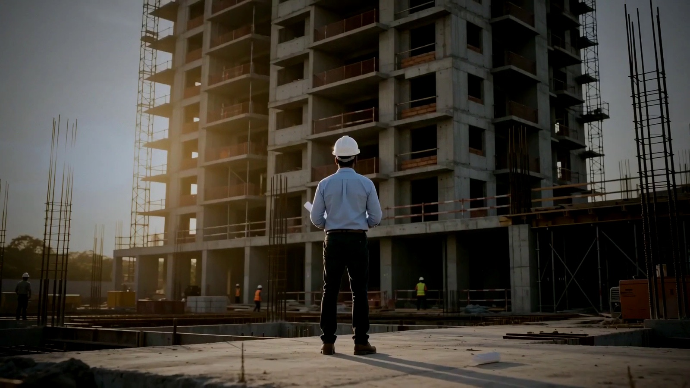

Entregado
Residencial Pradera Oriental
Residencial multifamiliar
- Ubicación
- Vista Hermosa, Santo Domingo Este
- Construcción
- 10,625 m²
- Unidades
- 40 apartamentos + 12 casas

Ingeniería y desarrollo inmobiliario · República Dominicana
Veinte años levantando vivienda social, residencias de lujo, hotelería en casco histórico e infraestructura clínica. Con la misma firma y el mismo estándar.
Manifiesto
Grupo PÁEZ · Santo Domingo
El grupo
Más de veinte años diseñando, planificando, construyendo y manteniendo obra en la República Dominicana. Constructora Páez y Asociados levanta proyectos en Villa Altagracia, la Ciudad Colonial, Miches y Santo Domingo, cada uno dentro de su propio fideicomiso de la Ley 189-11.
No somos operadores clínicos ni una empresa de tecnología. Somos quienes construyen — y esa precisión, sostenida durante dos décadas, es exactamente lo que hace creíble todo lo demás.

Veinte años
Antes del render y antes del brochure hay un terreno, unos planos y una firma que responde. Eso es lo que hacemos, y es lo que hace creíble todo lo que viene después.
Memoria de obra
Nueve desarrollos con ubicación verificable, metros construidos y unidades entregadas. Desde vivienda de bajo costo hasta residencias de 500 m², hotelería en casco histórico protegido e infraestructura clínica. La misma firma en todas.
Residencial multifamiliar
Residencial unifamiliar de lujo
Residencial multifamiliar
Residencial unifamiliar de lujo
Residencial y comercial multifamiliar
Condohotel · casco histórico
80% de las unidades colocadas en 60 días.
Condohotel · fachada histórica conservada
Infraestructura clínica
Residencial multifamiliar · turístico
Ningún desarrollo coincide con ese filtro.
Por qué importa el rango
Un apartamento de bajo costo en Los Tres Ojos y una casa de 500 m² con acabados en mármol en Los Restauradores no se construyen igual. Una fachada protegida en la Ciudad Colonial y una sala de hemodinamia tampoco. Haber entregado las cuatro cosas es la credencial: significa que el problema se resuelve desde la ingeniería, no desde una fórmula repetida.
En desarrollo

Comunidad residencial · Villa Altagracia · En obra
Una comunidad residencial pensada para quienes cruzaron los 55 con todo por vivir: vivienda, salud, comunidad y entorno en un solo lugar, a media hora de Santo Domingo. Fideicomiso constituido con Fiduciaria La Nacional y obra iniciada.

Salud · Distrito Nacional · En estructuración
No es un hospital: es infraestructura de coordinación clínica ambulatoria — consulta, diagnóstico, procedimiento, recuperación y seguimiento en un mismo activo. Concebido junto a los médicos que lo van a operar.

Residencial y hospitalidad · Santo Domingo
La escuela de ejecución del grupo: residenciales urbanos en escala humana y Verni Colonial, un activo de hospitalidad boutique en plena Zona Colonial. Presupuesto, obra y entrega bajo control propio.

Hospitalidad boutique · Ciudad Colonial
Sea dueño en la Ciudad Colonial. En el corazón de la primera ciudad de América, un condohotel boutique que recupera patrimonio construido y lo devuelve a la vida con estándares internacionales de hospitalidad.
Cómo trabajamos
Cada proyecto vive dentro de un vehículo fiduciario independiente. El capital de cada obra está separado, protegido y auditado desde el día uno.
Trece carpetas por proyecto — título, presupuesto, modelo financiero, estudio de mercado, legal y gobernanza — al estándar que exige un fondo institucional.
Diseño, planificación, construcción, gestión y mantenimiento con equipo propio. El que promete y el que entrega son la misma firma.
El sistema que estamos construyendo para que vivienda, salud, comunidad y familia dejen de coordinarse a mano. PÁEZ demuestra que se puede construir; KONFOR busca demostrar que lo construido puede volverse un sistema.
La vida adentro
Lo difícil es diseñar los lugares donde la gente decide encontrarse. En Vista de las Amapolas, cada espacio común responde a una pregunta concreta sobre cómo se vive bien después de los 55.


“Ambición en la arquitectura; sobriedad en la promesa.”
Contacto
Compradores, aliados, médicos e inversionistas: cada conversación empieza igual — con transparencia.
Conozca los proyectos activos, sus etapas y sus planes de pago.
Fondos y banca: la información de cada vehículo se comparte bajo estándar institucional vía KONFOR.
El Hub Médico PÁEZ se diseña con médicos, no para ellos. Converse con sus pares.